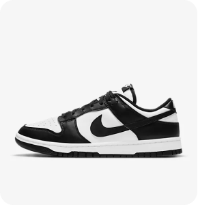
Nike Dunk Low Retro
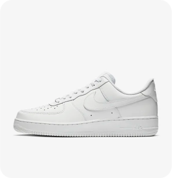
Nike Air Force One
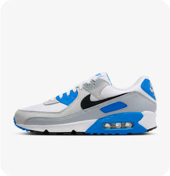
Nike Air Max 90
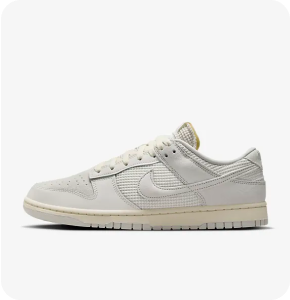
Nike Dunk Low
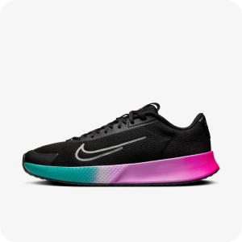
NikeCourt Vapor Lite 2 Premium
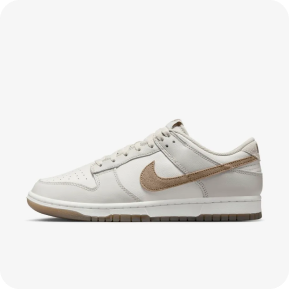
Nike Dunk Low Retro SE
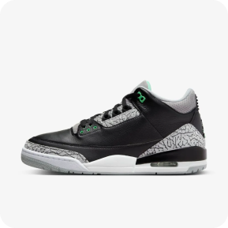
Air Jordan 3 Retro "Green Glow"
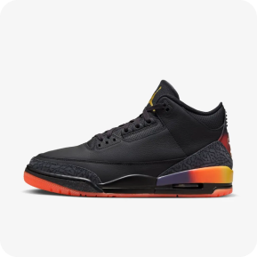
Air Jordan 3 Retro x J Balvin
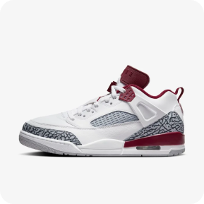
Jordan Spizike Low
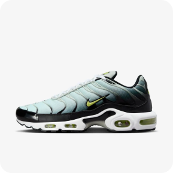
Nike Air Max Plus
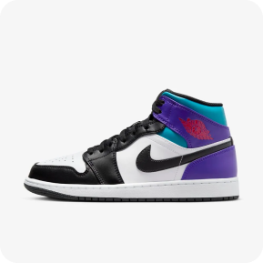
Air Jordan 1 Mid